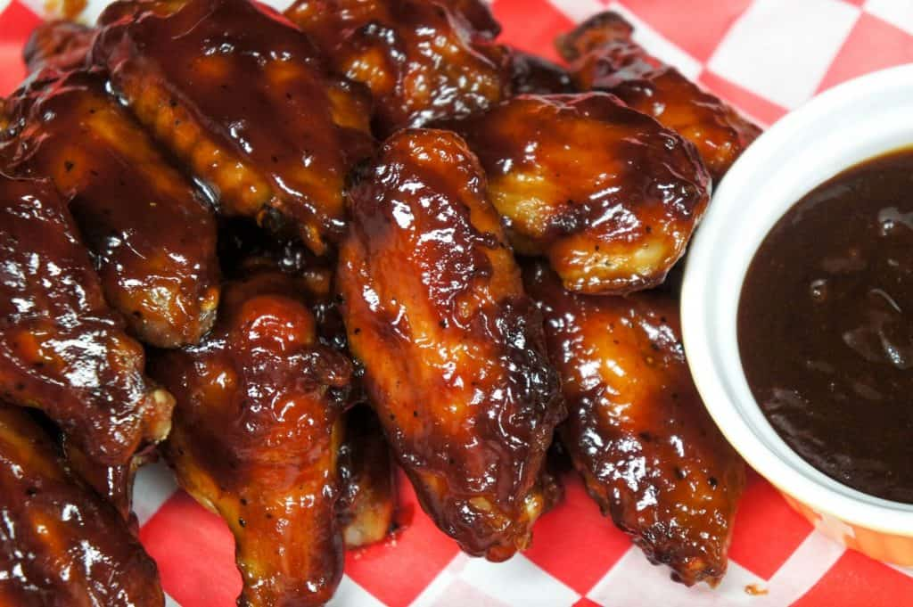

Sticky Barbecue Chicken Wings

Description
These sticky barbecue chicken wings are absolutely delicious.In this recipe, chicken wings are baked until they fall of
the bone, then they are coated with a sweet and tangy barbecue sauce.
Ingredients
- About 20-30 pieces of chicken wings (drums and flats seperated and wing tips removed.
- 1 teaspoon Salt
- 1 teaspoon Garlic powder
- 1/4 teaspoon Blackpepper
- Cooking spray
For the sticky barbecue sauce:
- 1 cup of Plain barbecue sauce
- 1/4 cup brown sugar
- 1/4 cup honey
- 2 tablespoons ketchup
- 1 teaspoon yellow mustard
- 1 teaspoon Worcestershire sauce
Instructions
You will also need: 2 large baking sheets, 1 cooling rack and pastry brush.
- Preheat oven to 375 degrees.
- Season the chicken wings with salt, garlic powder and pepper.
- Spray a baking sheet lightly with cooking spray. Place the chicken wings in a single layer on the baking sheet.
- Bake them for 30 minutes.
- Remove the wings from the oven and line a clean baking sheet with a cooling rack
- Spray the cooling rack lightly with cooking spray.
- Arrange the chicken wings in a single layer on the cooling rack, skin side up.
- Bake for another 15 minutes.
While the wings continue to cook, make the sauce
- Add the barbecue sauce,brown sugar, honey, ketchup, mustard and Worcestershire sauce to a saucepan.
- Heat the barbecue sauce over medium heat, stirring frequently to avoid sticking.
- Simmer the sauce for a few minutes until the sugar melts and the ingredients are incorporated.
Give the sauce all your attention whie it's simmering!
- Lower the heat to low and keep the sauce warm until ready to use, stirring occasionally.
- Add about 3/4 of the sauce to a bowl and reserve the rest for serving
Coat the wings with the barbecue sauce.
- Remove the wings from the oven and turn each one so the paler side is up
- Brush them with a generous amount of the barbecue sauce and bake for another 5 minutes
- Again, remove them from the oven and turn each wing. Brush them with a thick layer of the sauce.
- Arrange the chicken wings on a platter and serve them with the remaining barbecue sauce on the side
Home page